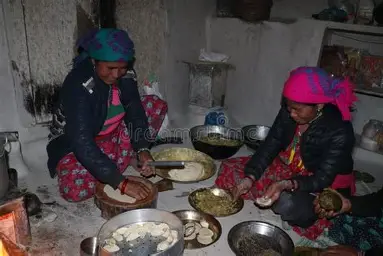
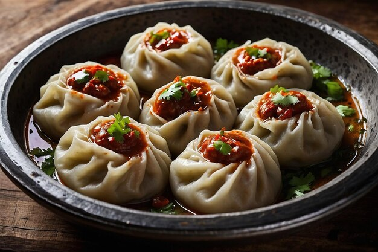

About Nepali Momos
Momos are a popular traditional dumpling in Nepal and the surrounding Himalayan regions. They can be steamed, fried, or pan-fried and are often filled with vegetables, chicken, or buffalo meat.
History of Momos
Momos originated from Tibet and became a staple in Nepali cuisine. Over the years, they have evolved to include a variety of fillings and sauces unique to Nepal.
Cultural Importance
Momos are more than just food; they are a part of celebrations, street food culture, and family gatherings. They are enjoyed by people of all ages and are a symbol of Nepal’s rich culinary heritage.
Fun Facts
- There are vegetarian and non-vegetarian varieties of momos.
- Momos are often served with a spicy tomato-based dipping sauce.
- Street vendors sell momos all over Nepal, especially in Kathmandu and Pokhara.